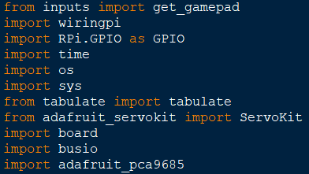
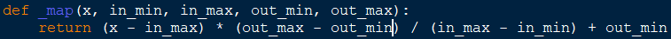
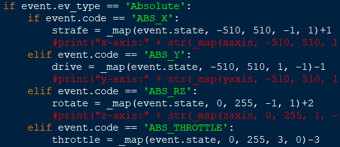
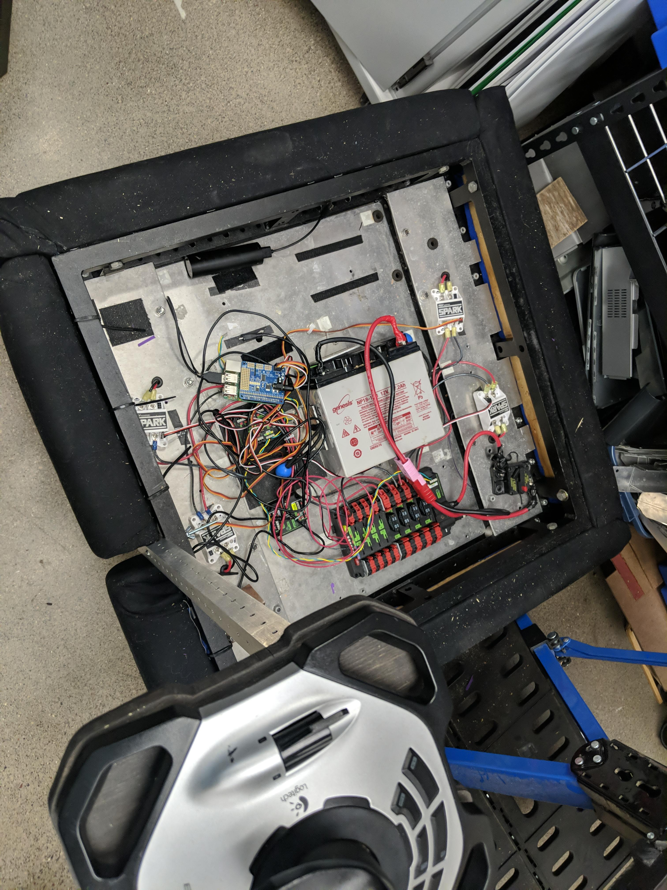
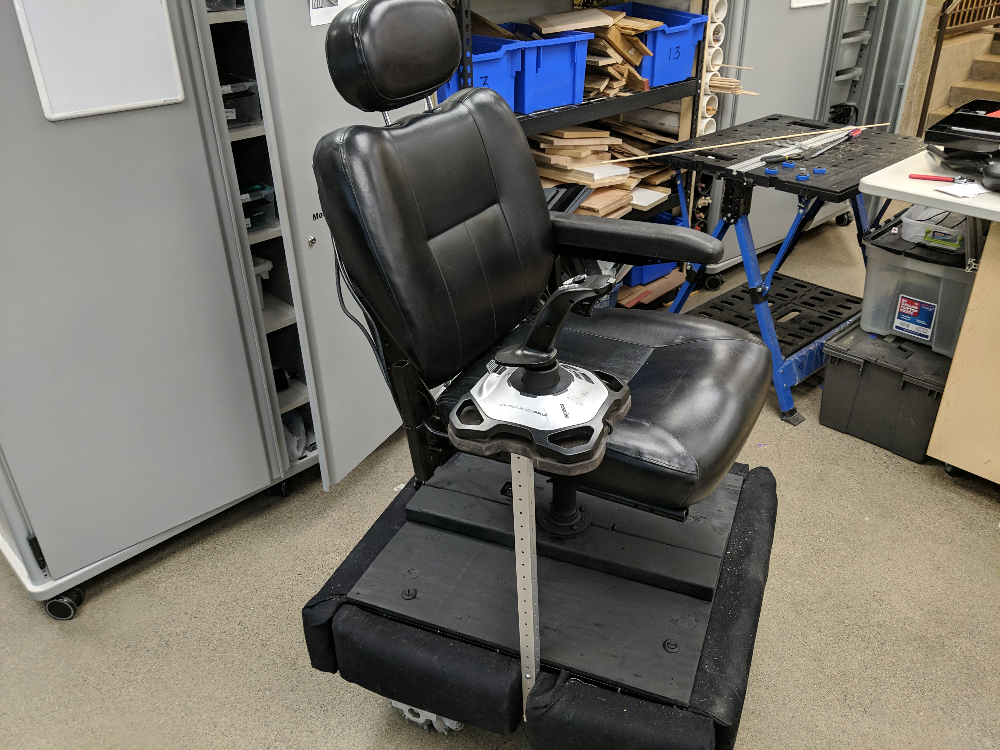

Robit
boring code first then how the robit works in the physical world, The software I wrote for the Robit was painful to write
had to use a large variety of modules to send specific data to the robot when the joystick was moved.
this was some code we we used to map(constraint two number into two other numbers, not sure how it works but it just does) the joystick values to the robot's motor values.
We used this snippet to collect joystick data that would be converted to motor values and sent to the robot later on.
Now the more interesting part of this, The actual physical parts of the Robit. I only have pictures and not much to say about how it actually functions cause I don't know. The Thing I really know about the internals is that the pi cannot be turned on while the motor controller is attached to it, the pi just doesn't work if it's booting up and it's attached.
 